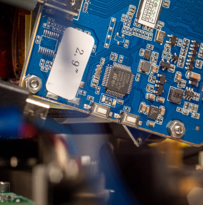
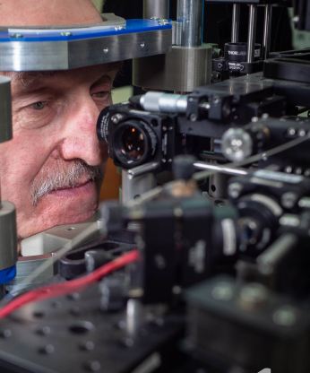
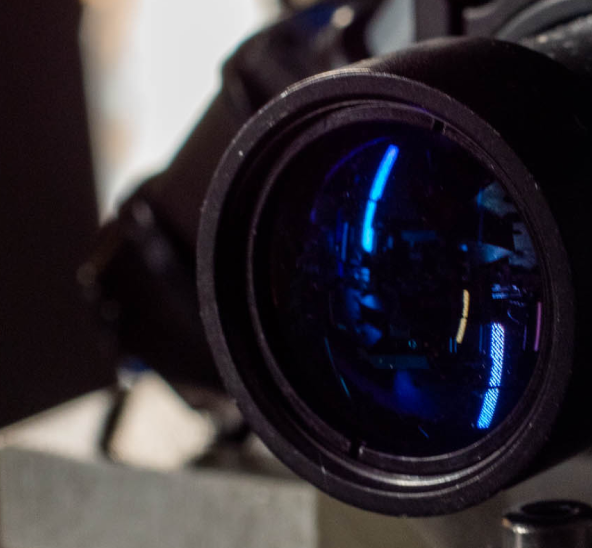

Please provide your email address to get
occasional updates from Inoko Vision



Sophisticated optics
Faster than the Tiniest Involuntary Eye Movements
Thanks to sophisticated optical, synchronization, and control systems, combined with smart algorithms, our tracking system performs faster than the tiniest eye movements. We can see and quantify the smallest microsaccades, as well as drift and tremor movements. This unprecedented precision opens the door to finding unexplored relations between subtle changes in individual oculomotor characteristics in the course of neurodegenerative diseases. The critical component of the device is the ultrafast retinal-based eye tracking system (FET - FreezEye Tracker) [1].
Ultra precision
Easy Control and Precise Synchronization in Psychophysical Experiments
The device is equipped with a digital display to present visual tasks and a pupil camera for easy and fast positioning of a subject to assure data quality during the experimental session. Custom-designed electronics ensure precise synchronization of eye movement recording and task display, which is crucial in psychophysics experiments. The experiments can be easily designed by vision scientists and neurologists who already use contemporary eye trackers in research and clinical studies, as well as new users interested in eye tracking.

Non-Invasive, Reproducible Examination
The NeuroFET is Free of the Problem of Sub-Optimal Initial Set Up and Calibration Procedure
In examining elders and people with disabilities, special effort was made to make it as comfortable as possible and reduce the time required for the experimental session. In contrast to available video eye trackers, the NeuroFET is free of the problem of sub-optimal initial set up and calibration procedure. The key feature is that the wavelength of light used for imaging the eye is completely invisible to the subject, so the psychophysical experiments can be performed without any undesired interference from the tracker. We use a freeware PsychoPy environment to create the psychophysical experiments, and custom-designed experiments can also be easily added by any user.
The Perfectly Tailored Software
Machine Learning-Based Algorithms
Since our system is equipped with the most modern components and optical techniques, we have no choice but to use equally modern algorithms. We employ machine learning to detect drift, microsaccades, saccades, and other events in eye movements. Using a combination of hand-crafted and in-depth features extracted from these events, we apply AI for differential disease diagnosis.